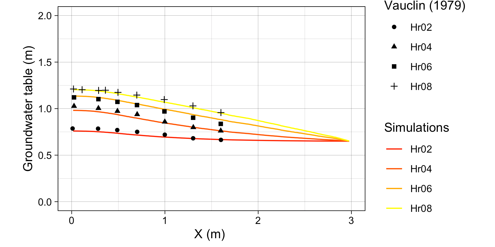
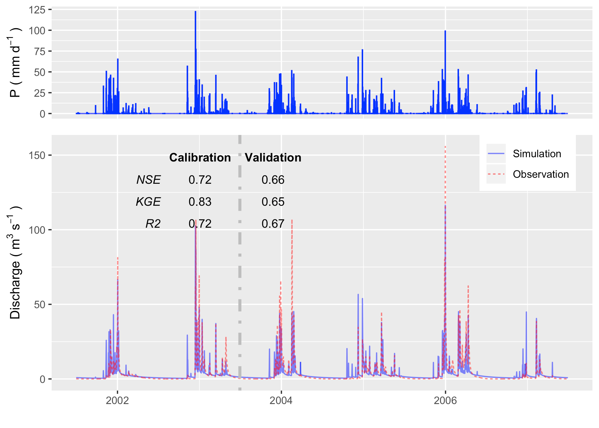

Chapter 6 应用案例
SHUD作为通用的流域水文模型，可以快速部署与全球大部分流域，能为全球水文及相关研究提供快速可靠的模拟和预测，也可作为防灾减灾、农业估产、生态环境模拟等等方面提供可靠水文背景。 本章节通过全球6个流域展示SHUD模拟系统，向用户展示水文基础数据获取、模型构建、水文模拟、自动化校准、数据分析等研究流程。用户可通过实例了解模型的可靠性、可用性和效率，从初学者进阶为SHUD系统的开发者和合作者。
构建SHUD模型的建议 1. 检查数据格式和一致性，例如：空间数据投影是否和重叠区，气象数据的单位是否符合要求？时间序列数据值是否为时间平均值？模型运行是否有异常值提示？ 1. 使用“离线”模式运行（只运行模型的读取和写出，不实际计算），可以检查模型的输入输出是否正确。 1. 从“理想化”的驱动数据入手，（.cfg.para文件中FORC_debug=1）——启动简单驱动数据驱动模型，跳过可能的驱动数据错误。 1. 运行较短模拟时间，然后读取结果，并检验结果是否符合预期。 1. 如果以上过程都无误，即可带入全部数据运行模型。
6.1 V形流域
本案例源码和数据获取地址： Github: https://github.com/Model-Intercomparison-Datasets/V-Catchment
V形流域（V-Catchment， VC）是一个可验证数值水文模型的理想化模型；此流域不仅有效测试了模型的地表径流、汇流、河川径流和水量平衡，也可验证数值方法的质量守恒，甚至模型的网格划分的无关性（Independancy）和收敛性（Convergence）。
VC模拟空间有两个倾斜的坡面和链接坡面的倾斜河道组成。
两个坡面是\(800 \times 1000 m\)，并且曼宁系数\(n=0.015\)的斜面. 居于坡面之间的河道宽度\(20 m\)宽，\(1000 m\)长，曼宁系数为\(n=0.15\). 从坡面顶到河道的坡度为0.05（沿\(x\)轴方向），同时，从河道起点到重点的坡度为0.02，（沿\(y\)轴方向）。坡面与河流都是完全不透水表面，即无下渗，无植被。
整个VC接收连续、均一降水，降雨强度\(18 mm/hr\)并持续90分钟，累计降雨量为\(27mm\)。理想假设无下渗和无蒸发，因此坡面的水量将完全流入河道，并从河道出口出离开此流域。因此模拟结果要满足坡面流出水量等于总降雨量，以及河道出流量等于总降雨量和坡面总流量，即质量守恒定律。
\(\sum P \cdot A = \sum Q_{slope} = \sum Q_{river}\)
6.1.1 Shen等(2010) 中的结果
文献中有多个模型研究重复了VC实验，其中Shen等(2010)输出了坡面向河道的流量，因此我们选用Shen等（2010）的结果进行对比。
经过分析我们发现Shen等(2010)的坡面流量存疑。解释如下：基于质量守恒和连续性定律，总输入（降雨）必须等于总的输出（坡面净流量或者河道出流量），而Shen等(2010)的结果中坡面流量仅为河道流量和降雨的20分之一。这现象可能是作者绘图过程中的失误导致；因此我们的实验中数字化了Shen等(2010)的结果，但是将坡面流量放大到20倍——即满足质量守恒的量级，然后对比实验。
使用SHUD对VC进行模拟，结果如下图。坡面径流和河道出流量都满足质量守恒定律和连续性定理，也能很好验证对于Shen等(2010)结果的推测。
6.2 Vauclin水槽箱试验
本案例数据和源码获取地址： Github: https://github.com/Model-Intercomparison-Datasets/Vauclin1979. Vauclin试验(Vauclin, Khanji, and Vachaud 1979) 旨在评估降雨或灌溉下非饱和层中地下水位变化和土壤湿度。实验在一个长 \(3\) 米、深 \(2\) 米、宽 \(0.05\) 米的沙盒中进行（见图 \(\ref{fig:vauclin}\)）。盒子里填充了均匀的沙子颗粒，并测量了水力参数：饱和水力传导率为 \(35\) cm/hr，孔隙度为 \(0.33\) m\(^3\)/m\(^3\)。沙盒的左侧和底部为不透水层，顶部和右侧为开口。水头恒定设置为 \(0.65\) 米。在顶部左侧的前 \(50\) 厘米施以恒定的灌溉量（\(1.48\) cm/hr），而顶部的其他部分被盖上以避免水分蒸发。
实验的初始状态是右侧恒定水头下的平衡水位。也就是说，整个沙盒的饱和水位被稳定地保持在 \(0.65\) 米。当地下水位达到平衡时，于 \(t=0\) 开始进行灌溉。随后，测量了沙盒长度方向上多个位置处的地下水位，分别在实验进行的 2、4、6 和 8 个小时进行了测量。
 除了 中指定的参数外，SHUD 还需要额外的信息，其中包括 van Genutchen 方程中的 \(\alpha\) 和 \(\beta\)，以及含水量 \(\theta_s\)。因此，我们使用校准工具来估计这些参数的代表值。在模拟中使用校准是合理的，因为模型不可避免地简化了实际的水力过程。校准因此将参数推向代表性值，以逼近或拟合的自然过程。经过校准后，得到的数值分别为\(\theta_s= 0.32 m^3/m^3\)，\(\alpha=6.0\)，\(\beta=6.0\)。与 和 中的模拟结果一样，存在模拟和实测数据之间的不匹配。
这种不匹配可能是由于：(1) 不饱和层和饱和层的含水层描述限制了模拟不透水带中的入渗和补给能力，或者 (2) 相对于这个实验的相对微观尺度，水力性质更复杂。
SHUD 模拟了所有四个测量点的地下水位（见图 \(\ref{fig:vauclin}\)(b)）。模拟和 Vauclin 观测结果之间的最大偏差为 \(5.5 cm\)，\(R^2\) = \(0.99\)，与 中数值模拟的偏差 \(5.2 cm\) 相当。当校准考虑更多的土壤参数时，模拟偏差降至 \(3 cm\)。当然，SHUD 对不饱和带和饱和带的简化有利于计算效率，但也限制了模型在微观尺度问题上的适用性。
与 Vauclin 实验相比，通过模拟结果验证了入渗、补给和侧向地下水流的算法。对于不饱和层内更可靠的垂直流动，需要使用多层次模型，这是 SHUD 的下一个版本计划中的任务。
6.3 美国加州Cache河流域
本案例的源码获取地址： Github: https://github.com/Model-Intercomparison-Datasets/Cache-Creek. 数据非常大，如果需要原始数据，请联系作者 Lele Shu
6.3.1 Cache Creek Watershed
Cache Creek Watershed (CCW)是美国加州萨克拉门托河上游的一个支流，面积196.4 \(km^2\)（下图），海拔高程450米至1800米，平均坡度38% \(L/L\)——如此陡峭地形是对数值方法水文模型的挑战。
根据2000-2017年间，NLDAS-2数据，流域内平均气温12.8 \(^\circ C\)，年降雨量817 \(mm\)，然而降雨年内、年际分布不均，属于典型地中海气候——降雨集中在冬天、夏天温度高且 干旱无雨。
6.3.2 SHUD 模拟和校准
我们在 CWW 中进行的模拟覆盖了 2000 年至 2007 年。由于该地区属于地中海气候，模拟从夏季开始，以确保在每年十月的开始之前有足够的时间。在我们的实验中，第一年（2000年6月1日至2001年6月30日）是平衡期，接下来的两年（2001年7月1日至2003年6月30日）是校准期，而2003年7月1日至2007年7月1日期间则用于验证。 CCW 的非结构域（图 \(\ref{fig:sh}\) (d)）是在 GitHub 上的 R 包 rSHUD (rSHUD) 中建立的。三角形单元的数量为 \(1147\)，平均面积为 \(0.17 km^2\)。河网的总长度为 \(126.5 km\)，由 103 个河段组成，最高级别的河段为 4 级。通过对参数进行校准，使用 SHUD 模型在非并行配置下（在 Mac Pro 2013 Xeon 2.7GHz, 32GB RAM 上禁用 OpenMP），模拟 CWW 中的 17 年需要 5 小时。
6.3.3 结果
图 显示了在 USGS 11451100 测站的观测流量和模拟流量之间的比较。校准过程使用协方差矩阵自适应进化策略 (CMA-ES) 进行自动校准 。每个种群分配了 72 个个体，保持最佳个体作为下一代的种子，并进行有限的扰动。下一代的扰动是由上一代的协方差矩阵随机生成的。经过 23 代，校准工具确定了一个局部最优的参数组合。


我们使用 SHUD 模型计算的水文指标来演示地下水分布的空间分布情况（如图 \(\ref{fig:sh_gw}\) 所示）。 图 \(\ref{fig:sh_gw}\) 展示了验证期间的年平均地下水位。由于模型固定了一个 \(30 m\) 的含水层，结果仅表示该含水层内部的地下水情况。上图中绿色线的地下水位和海拔高度被提取并绘制在下图中。灰色的带状区域是 \(30 m\) 含水层，蓝色的线是地下水储量大于零的位置。带有右轴的绿色多边形是沿剖面线的地下水储量。地下水遵循地形走向，积聚在山谷内或相对平坦的区域。在 CCW 中，地下水非常深或者不会停留在陡峭的山坡上。